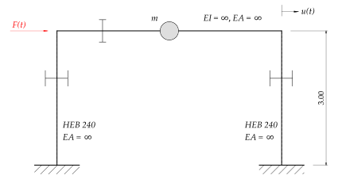
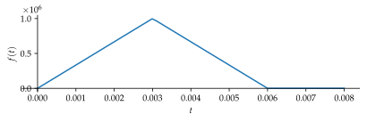
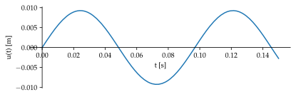
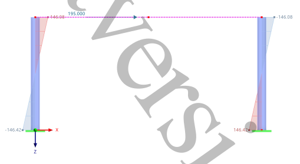

%run style_and_packages.ipynb5 Beispiel: Impulssatz
5.1 Aufgabenstellung
Abbildung 5.1 zeigt das System eines Stahlrahmens. Dieser wird durch eine kurzzeitig einwirkende Stossbelastung \(F(t)\) in Höhe des Rahmenriegels beansprucht.

Gesucht:
- Der Maximalwert der zu erwartenden Riegelauslenkung (näherungsweise)
- Darstellung des zeitlichen Verlaufs \(u(t)\) in einem Diagramm
- Nachweis der Elastizität des Systems anhand der Rückstellkraft (Spannungsnachweis mit Fliessspannung \(f_y\) als Grenze)
Gegeben:
- Lastfunktion gemäss Abbildung 5.2
EA_riegel, EI_riegel,EA_stuetze, EI_stuetze, m_tot, H, f_y, t, F_max, t_1, t_2,W_el_y = sp.symbols('EA_riegel, EI_riegel,EA_stuetze, EI_stuetze, m_tot, H, f_y, t, F_max, t_1, t_2 W_el_y')
A_1, A_2,u_0, v_0 = sp.symbols('A_1:3 u_0 v_0')
u = sp.Function('u')(t)params_not_relevant = {
EA_riegel:sp.oo,
EI_riegel:sp.oo,
EA_stuetze:sp.oo,
}
# render.dict_render(params_not_relevant)params = {
EI_stuetze:23646000.0*unit.N*unit.m**2,
m_tot:5000.0*unit.N*unit.second**2/unit.m,
W_el_y:938.0*10**3*unit.mm**3,
H:3000.0*unit.mm,
F_max:1000.0*10**3*unit.N,
t_1:0.003*unit.second,
t_2:0.006*unit.second,
f_y:355.0*unit.N/unit.mm**2,
u_0:0.0
}
params_plot = convert.param_value(params)params_tot = params.copy()
params_tot.update(params_not_relevant)
render.dict_to_table(params_tot)| \(EA_{riegel} = \infty\) | \(EA_{stuetze} = \infty\) |
| \(EI_{riegel} = \infty\) | \(EI_{stuetze} = 23646000.0 \text{m}^{2} \text{N}\) |
| \(F_{max} = 1000000.0 \text{N}\) | \(H = 3000.0 \text{mm}\) |
| \(W_{el y} = 938000.0 \text{mm}^{3}\) | \(f_{y} = \frac{355.0 \text{N}}{\text{mm}^{2}}\) |
| \(m_{tot} = \frac{5000.0 \text{N} \text{s}^{2}}{\text{m}}\) | \(t_{1} = 0.003 \text{s}\) |
| \(t_{2} = 0.006 \text{s}\) | \(u_{0} = 0.0\) |
F_1 = t*F_max / t_1
F_2 = F_1.subs(t,t_1)-((t-t_1)*F_max / t_1)
F_t = sp.Piecewise((F_1,t<t_1), (F_2,t<=t_2), (0, t>t_2))
p_last = sp.plot(F_t.subs(params_plot), (t,0,0.008), size=(5.9,2))

5.2 Musterlösung
5.2.1 Horizontale Steifigkeit
Für entsprechende Anwendungsfälle gibt es fertige Lösungen zur Bestimmung der Steifigkeit. Gemäss Abbildung 5.1 ist die Stütze am Fuss- und Kopfpunkt eingespannt (Änderungen der Lagerung beeinflussen die Steifigkeit!). Somit resultiert die Steifigkeit zu:
\[ k_{Stuetze} = \frac{12EI_{Stuetze}}{H^3} \tag{5.1}\]
Diese gilt für eine einzelne Stütze. Angewendet auf das Beispiel folgt die Systemsteifigkeit zu:
k = 2 * 12 * EI_stuetze / H**3
render.eq_display('k_', k,
'k_', k.subs(params).simplify().evalf(3))\[\begin{equation}k_{} = \frac{24 EI_{stuetze}}{H^{3}}\end{equation}\]
\[\begin{equation}k_{} = \frac{2.1 \cdot 10^{7} \text{N}}{\text{m}}\end{equation}\]
5.2.2 Eigenkreisfrequenz
omega_n = sp.sqrt(k/m_tot)
render.eq_display('omega_n', 'sqrt(k/m)',
'omega_n', omega_n,
'omega_n', omega_n.subs(params).simplify().evalf(3))\[\begin{equation}\omega_{n} = \sqrt{\frac{k}{m}}\end{equation}\]
\[\begin{equation}\omega_{n} = 2 \sqrt{6} \sqrt{\frac{EI_{stuetze}}{H^{3} m_{tot}}}\end{equation}\]
\[\begin{equation}\omega_{n} = \frac{64.8}{\text{s}}\end{equation}\]
5.2.3 Bewegungsgleichung
Die Bewegungsgleichung für einen ungedämpften Einmassenschwinger ist die folgende:
\[ m u(t)'' + k u(t) = F(t) \tag{5.2}\]
5.2.3.1 Approximation der Lösung
Es handelt sich um eine inhomogene Differentialgleichung 2.Ordnung. Auf die exakte Lösung der Gleichung wird nicht eingegangen. Es wird versucht die bemessungsrelevanten Parameter näherungsweise zu bestimmen. Dies lässt sich mit dem Impulssatz approximieren.
\[ F \Delta t = m \Delta v \tag{5.3}\]
Dieser besagt, dass die einwirkende Kraft \(F\) im betrachteten Zeitabschnitt \(\Delta t\) der Masse \(m\) multipliziert mit der Geschwindigkeitsänderung \(\Delta v\) des Objekts entspricht. Für eine kurze Anregung, wie im Beispiel der Fall ist, kann die Anfangsgeschwindigkeit wie folgt bestimmt werden:
\[ v_0 = \frac{I}{m} \tag{5.4}\]
\[ I = \int_{0}^{t_2} F(t) \,dt \tag{5.5}\]
I = sp.integrate(F_t.subs(params), (t,0,t_2.subs(params)))
v_0 = I / m_tot
## Die Anfangsgeschwindigkeit wird zum Params dict hinzugefügt
params['v_0'] = v_0.subs(params)
params_plot = convert.param_value(params)
render.eq_display('I_', I,
'v_0', v_0,
'v_0', v_0.subs(params))\[\begin{equation}I_{} = 3000.0 \text{N} \text{s}\end{equation}\]
\[\begin{equation}v_{0} = \frac{3000.0 \text{N} \text{s}}{m_{tot}}\end{equation}\]
\[\begin{equation}v_{0} = \frac{0.6 \text{m}}{\text{s}}\end{equation}\]
Durch die Impuls-Betrachtung vereinfacht sich die Bewegungsgleichung zu:
\[ m u(t)'' + k u(t) = 0 \tag{5.6}\]
Mit der Anfangsgeschwindigkeit als Randbedingung.
\[ u'(t=0) = v_0 \tag{5.7}\]
und der Startauslenkung:
\[ u(t=0) = u_0 = 0 \tag{5.8}\]
Kann mittels der folgenden Ansatzfunktion die homogene Differentialgleichung gelöst werden:
\[ u(t) = A_1 \cos(\omega_n t) + A_2 \sin(\omega_n t) \tag{5.9}\]
bewegungsgleichung = m_tot*sp.diff(u,t,2) + k*u
ansatzfunktion = sp.Eq(u,A_1 * sp.cos(omega_n*t) + A_2*sp.sin(omega_n*t))
eq_randbedingung_1 = sp.Eq(u_0,ansatzfunktion.rhs.subs(t,0))
eq_randbedingung_2 = sp.Eq(v_0, sp.diff(ansatzfunktion.rhs,t).subs(t,0))
A_solve = sp.solve([eq_randbedingung_1, eq_randbedingung_2],[A_1, A_2],dict=True)[0]
u_t = ansatzfunktion.subs(A_solve)
render.eq_display('u(t)',u_t.rhs.subs(params).simplify().evalf(3))\[\begin{equation}u{\left(t \right)} = 0.00925 \sin{\left(\frac{16.7406358567675 \sqrt{15} t}{\text{s}} \right)} \text{m}\end{equation}\]
u_t_plot = u_t.subs(params_plot).rhs/unit.N/unit.second
plot_beweg=sp.plot(u_t_plot, (t,0,0.15), ylabel='u(t) [m]',xlabel='t [s]',size=(5.9,2))

5.2.4 Rückstellkraft
Anhand der maximalen Amplitude lässt sich die maximale Rückstellkraft für den gesamten Rahmen bestimmen.
\[ F_R = k u = k A \tag{5.10}\]
t_max = sp.solve(sp.Eq(sp.diff(u_t.rhs,t),0),t)
u_max = u_t.subs(t, t_max[0].subs(params_plot)*unit.second).subs(params).rhs
F_R = k * u_max
render.eq_display('u_max', 'A',
'A', u_max.simplify().evalf(3),
'F_R', F_R.subs(params).simplify().evalf(3))\[\begin{equation}u_{max} = A\end{equation}\]
\[\begin{equation}A = 0.00925 \text{m}\end{equation}\]
\[\begin{equation}F_{R} = 1.94 \cdot 10^{5} \text{N}\end{equation}\]
5.2.4.1 Spannungsnachweis
Die Rückstellkraft wirkt im Zentrum der Masse und bewirkt das maximale Biegemoment bei den Fusspunkten.

M_max = F_R/2 * H * sp.Rational(0.5)
sigma_max = M_max /W_el_y
render.eq_display('M_max', 'F_R /2 * H * Rational(0.5)',
'M_max', M_max.subs(params).simplify().evalf(3),
'sigma_max', 'M_max / W_el_y',
'sigma_max', unit.convert_to(sigma_max.subs(params).simplify().evalf(3), unit.mm),
sp.Symbol('\\text{Nachweis}'), unit.convert_to(sigma_max.subs(params).simplify().evalf(3), unit.mm)<f_y,
sp.Symbol('\\text{Nachweis}'), unit.convert_to(sigma_max.subs(params).simplify().evalf(3), unit.mm)<f_y.subs(params))\[\begin{equation}M_{max} = \frac{F_{R} H}{4}\end{equation}\]
\[\begin{equation}M_{max} = 1.46 \cdot 10^{5} \text{m} \text{N}\end{equation}\]
\[\begin{equation}\sigma_{max} = \frac{M_{max}}{W_{el y}}\end{equation}\]
\[\begin{equation}\sigma_{max} = \frac{156.0 \text{N}}{\text{mm}^{2}}\end{equation}\]
\[\begin{equation}\text{Nachweis} = \frac{156.0 \text{N}}{\text{mm}^{2}} < f_{y}\end{equation}\]
\[\begin{equation}\text{Nachweis} = \text{True}\end{equation}\]